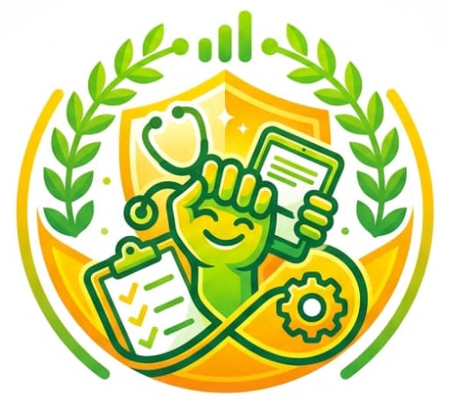
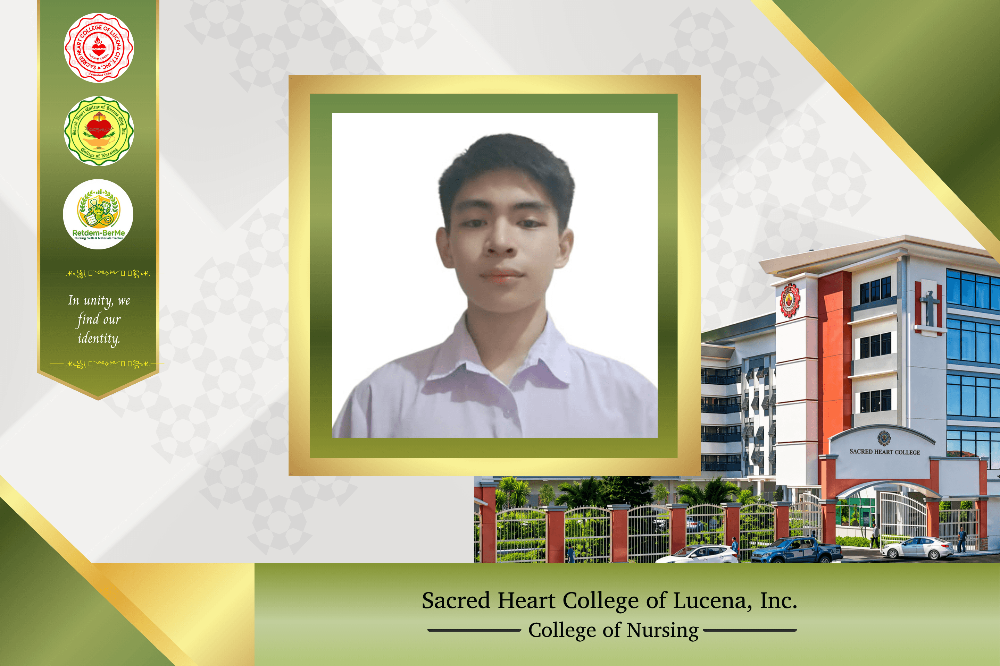
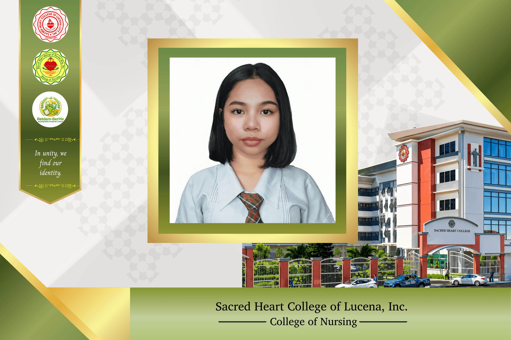
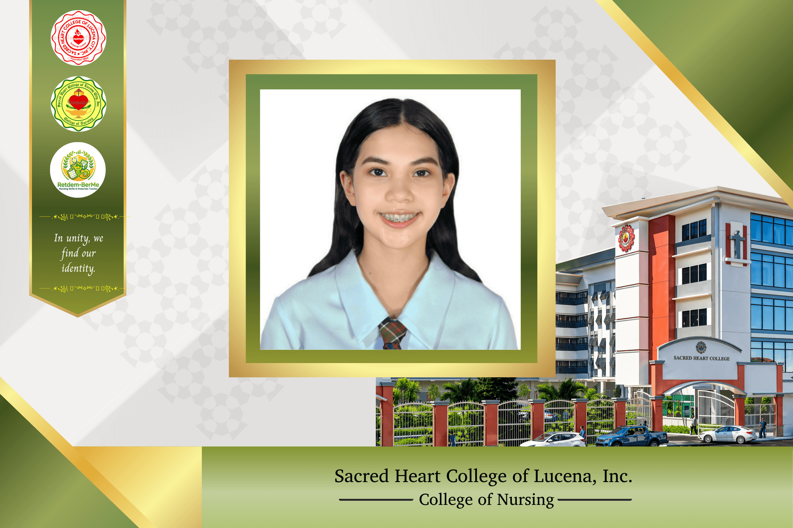
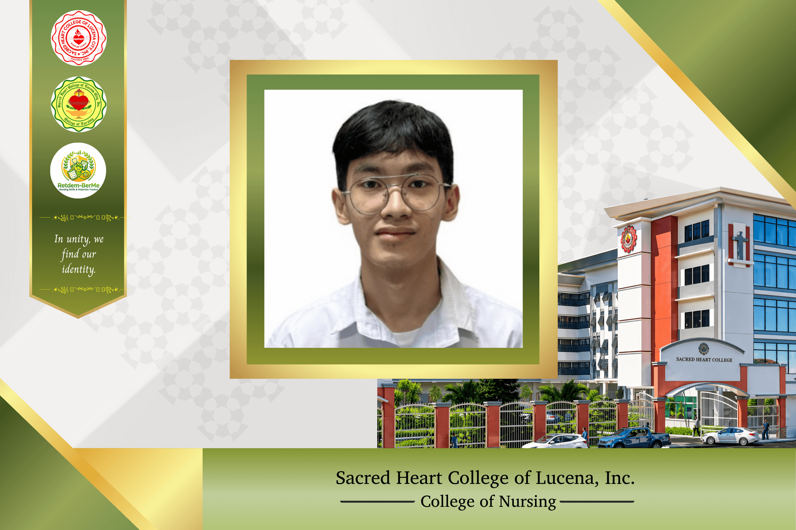
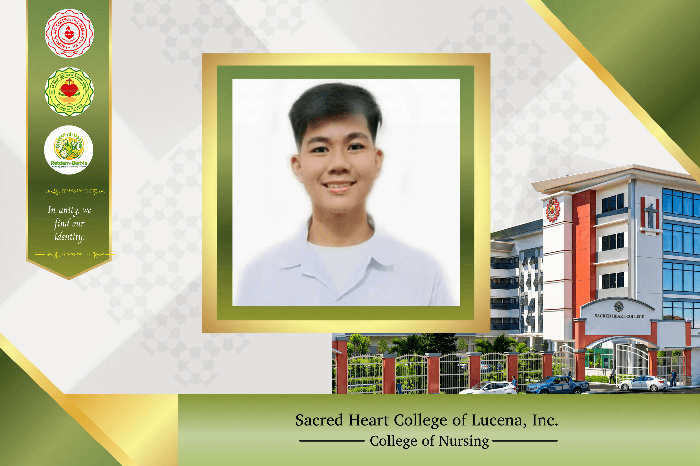

Student Benefit
Students can track return demonstration entries without relying on scattered paper forms and can review their academic records whenever needed.

Retdem-Ber-Me is designed specifically for nursing students to have an easier way of tracking return demonstration activities. Rather than depending on manual records, the system enables students to input relevant information such as the demonstration procedure, date, grade, and Clinical Instructor feedback.
Our platform ensures easy and convenient access to the records, which will be very beneficial to the students since they can access their records from anywhere and at any time. Clinical Instructors can also monitor and check the students’ records quickly, depending on their academic year.
Students can track return demonstration entries without relying on scattered paper forms and can review their academic records whenever needed.
Clinical Instructors can monitor and check student records quickly, especially when reviewing progress by academic year.
DR personnel can encode and schedule borrowed materials in a shared calendar allowing all students to view availability and plan accordingly
Retdem-Ber-Me was developed to address administrative inefficiencies by transitioning burdensome manual documentation into a more streamlined, automated system. This helps students focus more on clinical proficiency instead of repeatedly managing paper-based records.
By digitizing return demonstration data, the platform improves access, consistency, and convenience for both students and instructors. What was once vulnerable to misplaced forms and delayed updates becomes more structured and easier to review.
The Borrowing Materials System was chosen because the group identified a common problem among nursing students: difficulty tracking borrowed equipment and managing return schedules due to manual and unorganized recording methods.
Without a proper system, details such as the borrower's name, materials used, and return dates are often misplaced or forgotten, leading to confusion, delays, and even the loss or misuse of clinical equipment. The system supports better accountability, more accurate documentation, fewer scheduling conflicts, and smoother clinical activities.
Retdem-Ber-Me logo reflects the system's purpose: combining the discipline of nursing education with a more organized and technology-supported process for managing records and materials.
Represents the strength and determination of nursing students as they work hard through their training.
The stethoscope, clipboard, and tablet show the connection between traditional nursing practice and modern technology.
Symbolize a smooth, continuous, and well-organized workflow that replaces messy paper-based recording.
Stand for professionalism and academic excellence, reflecting serious commitment to training and equipment management.




